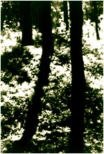

|  Under roten av Sigrid Marie Refsum
Jeg visste ikke helt hvordan jeg skulle ta det. Noe uhyggelig var det, og han ville så absolutt ikke slippe min oppmerksomhet et øyeblikk. Ikke ett. Han sørget for min totale årvåkenhet mens han lette gjennom forskjellige esker og innpakninger han hadde på rommet sitt etter noe han ville jeg skulle ta vare på. "Det er ikke stoff? " spurte jeg, redd for å blandes opp i noe, og kontakten mellom oss var heldigvis såpass velvillig at spørsmålet ikke ble tatt ille opp. "Nei", sa han, og blikket han kastet på meg sa at dette var noe helt annet, "det handler ikke om stoff", gjentok han, men noe hindret ham i å si hva det var.
"Gjem det godt", ba han. "Uansett hva som skjer med meg, må du gjemme det godt. Dette er vår hemmelighet. Du må være til å stole på. Vis deg verdig." Uansett. Uansett. Leiligheten hans ble ranssaket. Han ble arrestert for noe jeg ikke vet om han var skyldig i. Jeg leste bare at han døde i varetekt. Ville helst ikke vite noe som helst. Sikrest sånn. Jeg ble riktignok innkalt til forhør en gang. Vi var nemlig blitt sett sammen. Jeg gjennomskuet forhørstaktikken og klarte såvidt å styre unna, men antakelig var det noe annet som fanget etterforskernes interesse i større grad, så jeg slapp. "Men du har plikt til å melde fra om du vet noe, understreket politimannen." Jeg nikket. "Å holde tilbake vesentlig informasjon i en straffesak kan være straffbart i seg selv." Jeg nikket. Så fikk jeg gå. Forsåvidt hadde jeg ikke fått noe av ham, sa jeg til meg selv. Jeg skulle bare oppbevare, og språklige finurligheter elsket jeg. Stor var min overraskelse da han stod i døra hos meg etter mange år. " Jeg syntes jeg leste at du var død", protesterte jeg. "Det var en med samme navn. Jeg ble innlagt, jeg, uten rettergang, og nå er saken foreldet." Jo, jeg hadde tenkt på ham nå og da, det var ikke det, var litt urolig over at han skulle føle seg forsmådd. Jeg hadde min egen familie nå, og jeg fant det best at han kom på besøk når de andre ikke var hjemme. "Du husker jeg gav deg noe å ta vare på, sa han. Jeg lurte på hvor du hadde gjort av det." Igjen kom denne gamle uhyggefølelsen over meg: "Jeg visste ikke hva jeg skulle gjøre , så jeg grov den ned i skogen.". "Hvor?", han ble ivrig. Og det var noe ondt i blikket som gjorde meg på vakt. Noe ondt, eller noe sykt, jeg kunne ikke bedømme det. Etter dette ringte han til meg og skrev til meg stadig vekk, prøvde å få meg til å assossiere. Han hadde ikke vært utsatt for terapi for ingenting. Hvor hadde jeg gravd den ned? Hukommelsen min kom hans spørsmål i forkjøpet. Det gjaldt. I ly av, ja, hva? Jeg fant ikke ut, men våknet en natt ved fullmåne. Litt galskap er vel i meg også. Der under den gamle treroten under gjemmestedet der ingen hadde funnet meg når vi lekte gjemsel som barn. Jeg kledde meg mørkt. Familien var bortreist. Så stod jeg med den i hånden; en vakker sølvpistol, et arvestykke, ladd og skyteklar, såvidt jeg kunne bedømme. Hva skulle han med den? Så kom jeg på, jeg ville nesten ikke tro det, men det demret. Faren hans! Aldri åpenlyst, aldri åpenlyst. Hans far var i livsfare! Jeg hadde vært lojal i mange år. Mange år. Vi hadde delt hemmeligheter og nå i det siste, utvekslet sorg over alt som var gått oss forbi. Jeg hadde allltid ønsket å gjøre hva godt jeg kunne for ham. Nå var prøven her. Faren, hans opplevde fiende, skulle bøte med livet. Jeg nølte litt. Så løp jeg så fort det var mulig mellom trestammene i månelyset, og kastet. Kastet våpenet langt ut i sjøen. Det var et kostbart våpen. Av sølv. Det sank til bunns.
"Du gjorde vel i det," sa han, da jeg senere tok en kaffe med ham. "Jeg kunne ha drept ham. Jeg har mistet så mye. Far kunne ha reddet meg. Han gjorde det ikke. Jeg kunne drept ham. Og da jeg slapp ut var jeg klar for å gjøre det. Men livet mitt. Jeg ble gammel og død lenge før tiden, men, så lo han optimistisk: da må jo livsgleden gjenstå!" |